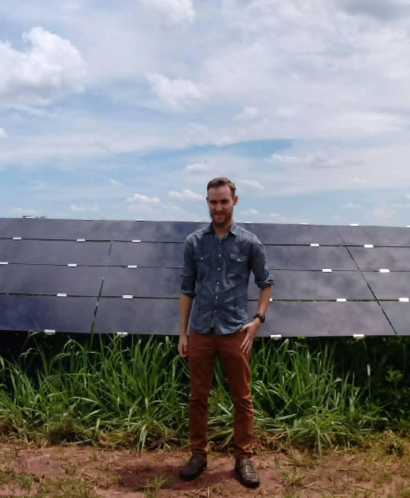
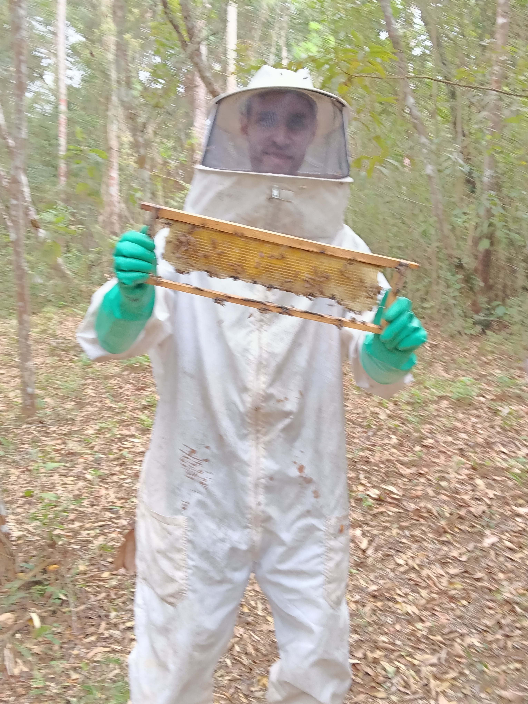
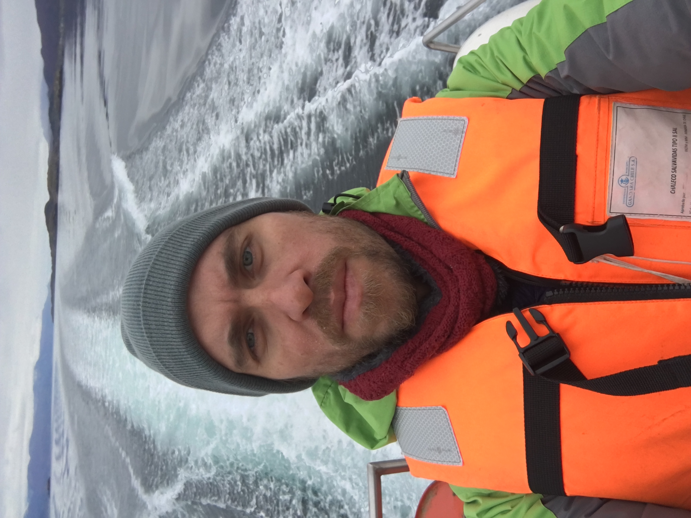
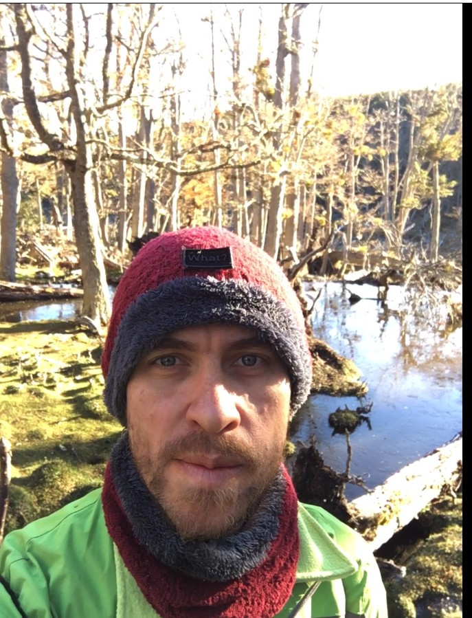

Dados para um planeta mais verde
Projetos que unem ciência de dados, inteligência artificial e gestão ambiental para monitorar, analisar e proteger ecossistemas naturais.
TEMPERATURAS MÍNIMAS E MÁXIMAS REGISTRADAS EM 2025 EM CADA PAÍS DO PLANETA TERRA · ATUALIZADO AUTOMATICAMENTE A CADA NOVO PROJETO ADICIONADO AO PORTFÓLIO




Ecossistemas em dados
Observatório do Rio Santa Rita
Monitoramento hidrológico multi-variável: vazão, qualidade da água e impactos de uso do solo. Dados USGS processados em séries temporais com detecção de anomalias. Baseado na Iniciação Científica (Universidade Brasil · 2016) com análise comparativa de bacias de diferentes manejos.
Usina Solar do Noroeste Paulista: Acompanhamento e Resultados
Análise de desempenho de usina fotovoltaica com 1,07 GWh de capacidade. Métricas: fator de capacidade, perdas por temperatura, curva de geração vs irradiação. Pipeline: dados de medição real → normalização → visualização Plotly. Baseado em supervisão técnica direta da instalação.
Síndrome do Colapso das Abelhas
Análise quali-quantitativa da mortalidade de abelhas por compostos químicos agrícolas em MG, SP e PR (2016–2022). Pipeline: entrevistas de campo → tabulação Excel → georreferenciamento Folium → visualização Plotly. 338 colmeias · ~20M abelhas · taxa de subnotificação de 62,5% identificada.
Potencial Eólico — Patagônia
Análise estatística da distribuição de Weibull aplicada a séries de velocidade de vento. Cálculo de densidade de potência eólica e capacidade instalável por região. Dados: Open-Meteo ERA5 + estações SENAMHI. Pesquisa de campo Mar–Out 2025.
Qualidade da Água — Patagônia
Monitoramento de 18 estações em rios patagônicos 2019–2024. Cálculo do IQA ponderado (pH, turbidez, OD, condutividade, temperatura). Mapa Folium interativo com séries temporais. Identificação de tendências de acidificação em 3 bacias hidrográficas.
Monitoramento Sísmico — Patagônia
Análise de atividade sísmica na zona de subducção da Placa de Nazca. Catalogação de eventos por magnitude e profundidade, mapeamento de risco e correlação com ecossistemas. Dados: USGS Earthquake Catalog + SHOA. Modelos de distribuição de Gutenberg-Richter.
Impacto das Espécies Exóticas Invasoras — Puerto Williams
Classificação de cobertura vegetal via sensoriamento remoto (índice NDVI + análise multitemporal Sentinel-2). Quantificação de área invadida e impacto em biodiversidade nativa. Comparativo 2015 vs 2024 com slider interativo. Trilíngue PT/ES/EN.
Abelhas sem Ferrão no Brasil
Mapeamento geoespacial de 238 espécies de meliponíneos no Brasil. Análise de sobreposição com zonas de desmatamento (PRODES/INPE), correlação com biomas e ameaças antrópicas. Índice de vulnerabilidade por espécie calculado via modelo de ponderação multicritério.
Previsão do Impacto Global do El Niño em 2026
Modelo preditivo de Machine Learning (Random Forest) treinado em dados históricos do ENSO para prever impactos globais do El Niño em 2026: temperatura, precipitação e eventos extremos por região. Projeto resultado direto das pós-graduações em IA & Machine Learning.
Consumo de um Carro Elétrico x Carro a Combustão — Brasil até a Patagônia
Comparativo de consumo energético e emissões entre veículo elétrico e a combustão na rota Brasil–Patagônia. Análise de infraestrutura, autonomia, custos e impacto ambiental.
Aquífero Guarani — Regiões e Capacidade Hídrica
Mapeamento das regiões do Aquífero Guarani e análise da capacidade hídrica em território brasileiro. Gestão sustentável, zonas de recarga e vulnerabilidade do maior aquífero transfronteiriço da América do Sul.
Pergunte ao pesquisador
IA treinada com o perfil completo de Amauri · Responde sobre projetos, formação, habilidades e disponibilidade
Conexões temáticas
Perfil académico
Atualmente baseado em São Paulo · Brasil. Entre novembro de 2024 e maio de 2026 desenvolvi projetos na Patagônia (Argentina e Chile) — experiência que gerou os projetos de Qualidade da Água, Potencial Eólico e Espécies Invasoras deste portfólio.
Aberto a propostas: presencial · remoto · híbrido | 🇧🇷 🇨🇱 🇦🇷 América do Sul & internacional
-
Técnico em Meio AmbienteINSTITUTO TECNOLÓGICO DO ESTADO DE GOIÁS — CATALÃO, GO · 2022
-
Tecnólogo em Gestão Ambiental · 3º ENADEFATEC JUNDIAÍ "DEPUTADO ARY FOSSEN" — SP · 2022
TCC: Síndrome do Colapso das Colônias · Iniciação Científica: Rio Santa Rita -
Graduação · Análise e Desenvolvimento de SistemasFACINT (ex-VINCIT) — MARINGÁ, PR · 2023
-
Pós-Graduação · IA, Machine Learning & Data ScienceFACINT (ex-VINCIT) — MARINGÁ, PR · 2025 · 360h
IA · ETL · Hadoop · Business Analytics · ML · NoSQL · Estatística Aplicada10,0 todas as disc. -
Pós-Graduação · Ciência de Dados & Big Data AnalyticsFACULDADE IMES — GOVERNADOR VALADARES, MG · 2024 · 360h
Big Data · Python & R · Data Science · Business Intelligence · Frameworks Big Data10,0 todas as disc. -
Pós-Graduação · Sustentabilidade e Energias RenováveisFACULDADE IMES — 2025
-
Experiência ProfissionalAnalista de Suporte de Sistemas · TIUNIVERSIDADE BRASIL — FERNANDÓPOLIS, SP · 2010–2020
ERP TOTVS · Supervisão de usina solar 1,07 GWh · Gestão de resíduos · Estudo de descarte de resíduos sólidos e compensação de carbono -
Estágio · Gestão AmbientalNEOTECH JUNDIAÍ — SP · 2021–2022
Estudo de descarte de resíduos sólidos em condomínios e compensação de carbono